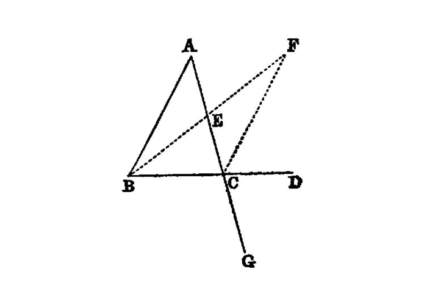

exterior angle of a triangle is greater than the either the interior or opposite angles¶
{kind=link}
I.16
In any triangle, if one of the sides be produced, the exterior angle is greater than either of the interior and opposite angles.
—Euclid
Let ABC be a triangle, and let one side of it BC be produced to D;
I say that the exterior angle [1] ACD`is greater than either of the interior and opposite angles [2]_ `CBA, BAC.
Let AC be bisected at E [I.10], and let BE be joined and produced in a straight line to F;
let EF be made equal to BE`[I.3], let `FC be joined [I.post.1], and let AC be drawn through to G [3] [I.post.2].
Then, since AE is equal to EC, and BE to EF,
the two sides AE, EB are equal to the two sides CE, EF respectively; and the angle AEB is equal to the angle FEC, for they are vertical angles. [I.15] Therefore the base AB is equal to the base FC, and the triangle ABE is equal to the triangle CFE [4], and the remaining angles are equal to the remaining angles respectively, namely those which the equal sides subtend; [I.4] therefore the angle BAE is equal to the angle ECF.
But the angle ECD is greater than the angle ECF; [I.c.n.5]
therefore the angle ACD is greater than the angle BAE.
Similarly also, if BC be bisected, the angle BCG, that is, the angle ACD [I.15], can be proved greater than the angle ABC as well.
Therefore etc.
references¶
[I.3]: /elem.1.3 “Book 1 - Proposition 3” [I.4]: /elem.1.4 “Book 1 - Proposition 4” [I.10]: /elem.1.10 “Book 1 - Proposition 10” [I.15]: /elem.1.15 “Book 1 - Proposition 15” [I.post.1]: /elem.1.post.1 “Book 1 - Postulate 1” [I.post.2]: /elem.1.post.2 “Book 1 - Postulate 2” [I.c.n.5]: /elem.1.c.n.5 “Book 1 - Common Notion 5”